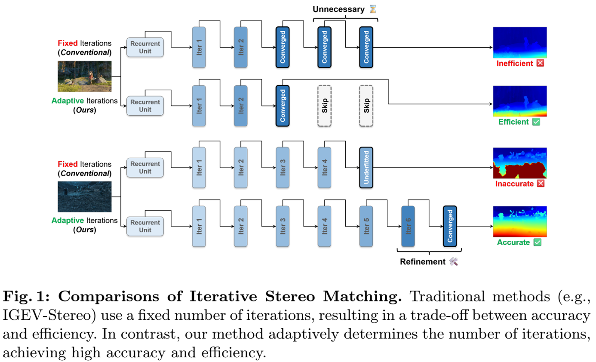
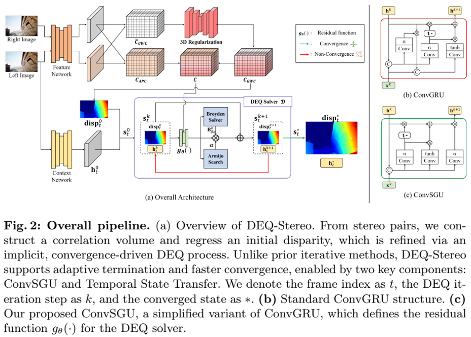
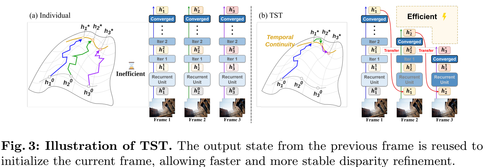
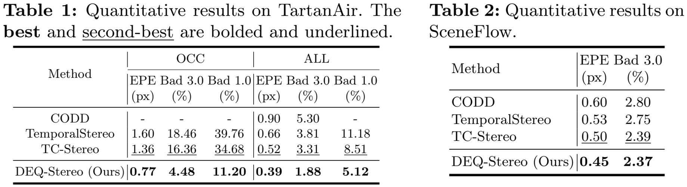
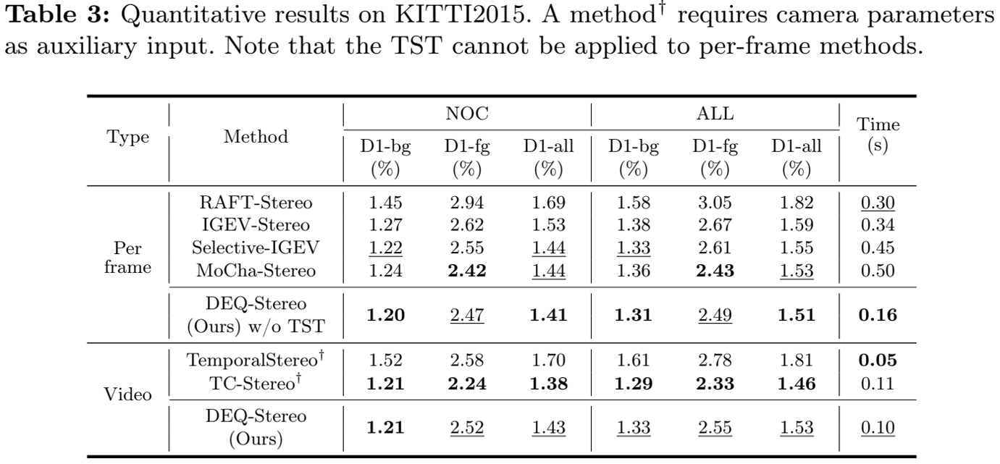
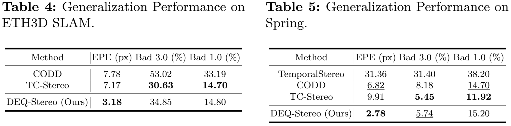
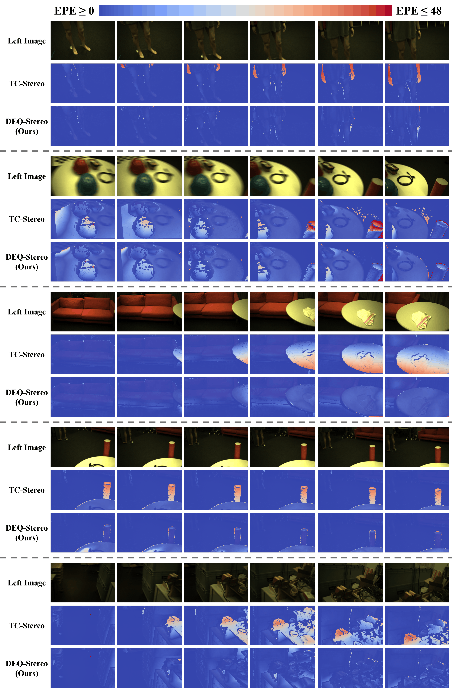
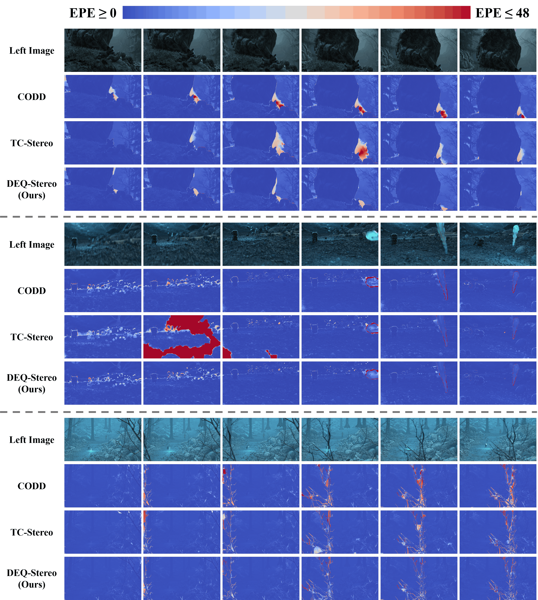

Iterative refinement models have significantly improved stereo matching accuracy, but their rigid, fixed update schedules incur heavy computational costs and a strict trade-off between speed and accuracy. This challenge is magnified in video streams, where traditional online methods resort to reducing feature channels or relying on expensive temporal warping. To address this, we propose DEQ-Stereo, a novel video stereo matching framework based on the Deep Equilibrium (DEQ) paradigm. Instead of unrolling a fixed number of iterations, DEQ-Stereo reformulates the refinement as an implicit fixed-point problem, adaptively terminating once convergence is met. To ensure fast and stable intra-frame convergence, we introduce the Convolutional Simplified Gated Unit (ConvSGU), which eliminates unnecessary non-linearities by modeling the latent state as a gated, element-wise sum of inputs. Furthermore, to exploit cross-frame temporal coherence, we propose Temporal State Transfer (TST), a warm-start strategy that propagates the converged hidden state to the next frame without requiring explicit pose or warping priors. Extensive evaluations demonstrate that DEQ-Stereo delivers state-of-the-art performance with a superior accuracy-to-latency trade-off.







Comprison on ETH3D SLAM dataset.

Comprison on Spring dataset.